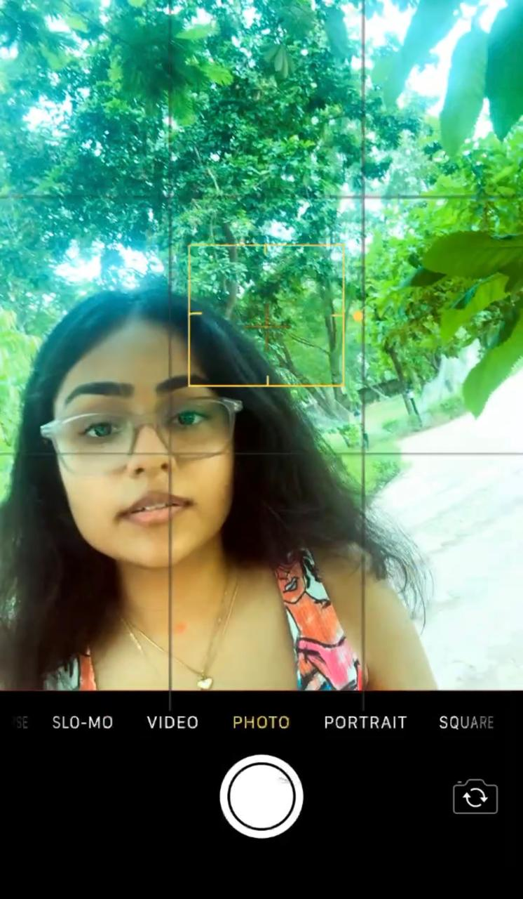
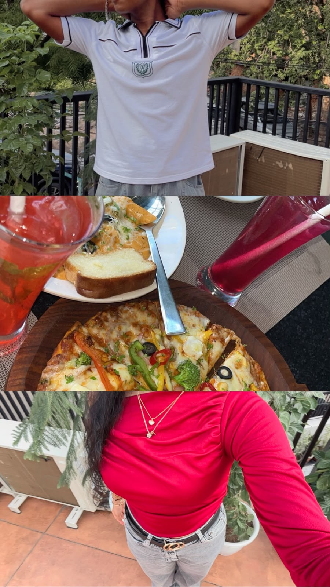
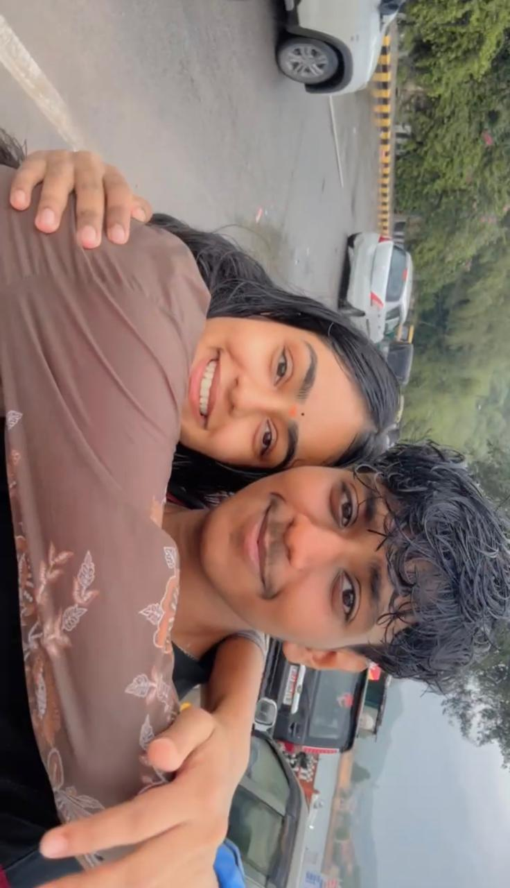
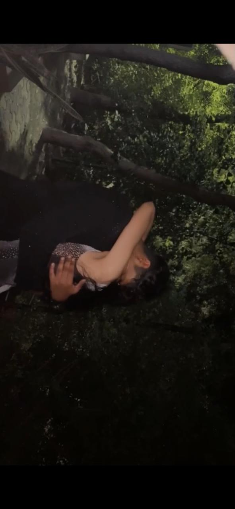

OUR STORY · CHAPTER ONE
Somehow,
it was always different.
Pii, before anything else, I want you to know the story from my side. Not just how we became us, but how it all felt to me.
A little walk down memory lane AARABMH · TREASURE HUNT
The girl I thought I had figured out.
Pii, mujhe aaj bhi yaad hai jab maine tujhe pehli baar dekha tha. For a second, I genuinely didn't know what happened to me. I was just standing there thinking, "Yeh kya hai?"
Phir obviously, mere dimaag ne apni kahaani bana li. Mujhe laga tu thodi arrogant hogi, proper boss-lady type. Jaise kisi ko easily bhaav nahi deti hogi.
Little did I know ki jis ladki ko main door se figure out karne ki koshish kar raha tha, usse baat karna meri college life ka itna special part ban jayega.
Actual story: something else entirely.

Where our little story began

It started with a simple conversation.
ONE LITTLE DINNER PLAN
And then, we started feeling familiar.
Phir mess mein apan dinner ke liye gaye, aur wahin se humari baat shuru hui. Ek normal si conversation thi. Koi grand moment nahi, koi dramatic scene nahi.
But Pii, tujhse baat karte hi pata nahi kyun kuch alag feel hua. Jaise tere andar kuch aisa tha jo main explain nahi kar paa raha tha, but notice zaroor kar raha tha.
Sirf 10 minute ke aas-paas baat karke hi mujhe tere saath ek ajeeb sa comfort feel hua. I felt safe enough to share something really personal about mudit.
Main normally kisi ke saath itni jaldi aisi baat share nahi karta. But somehow, talking to you felt different.
Shayad tabhi se ek connection start ho gaya tha. Humein khud nahi pata tha ki woh aage kya banega, but that first conversation stayed with me.
03 · THE MESSAGE I STILL REMEMBER
The day I finally told you.
Tu baar-baar pooch rahi thi, "Kaun hai?" Aur maine finally decide kiya ki ab jo dil mein hai, woh tujhe bata hi deta hoon.
Yrr kal se tu bas ek hi baat pooch rhi hai kon hai? 😭 Aur maine promise kiya tha ki bataunga toh aaj finally bata hi deta hu.
Can I be your boyfriend?
— DK
I meant every word. I still remember how much courage it took to send that message.
AMBER FORT · JUST US
A day out, and a feeling of home.
Phir aaya humara Amber Fort wala day out. Ek aisi memory jo mere liye sirf ghoomne jaane se zyada special ban gayi.
Sometimes, you don't realise how much a person means to you while you're making the memory. You realise it later, when you think back and find yourself smiling at the little details.
Aur uske baad cab mein tere saath jo comfort feel hua, woh bhi mere liye uss din ka ek special part tha.

One of my favourite days with you
05 · THE FEELING I CAN'T QUITE EXPLAIN
The peace in your hug.

Pii, there's one thing about being close to you that I still find difficult to explain.
Whenever I hug you, there's this peace that comes over my mind. For that little moment, my overthinking goes quiet.
I'm not stuck thinking about the past. I'm not worrying about the future. I'm not trying to figure everything out.
I'm just there, in that moment, feeling whatever I'm feeling, without needing to run away into a hundred different thoughts.
And that's what felt so different to me. It wasn't only that I loved spending time with you. It was that sometimes, around you, I could simply be present.
I don't know how to explain it perfectly. I just know it meant something to me.
AND THAT'S OUR STORY, SO FAR
These moments will always mean something to me.
I can't decide what our next chapter looks like on my own. But I wanted you to know why the chapters we've already lived mean so much to me.